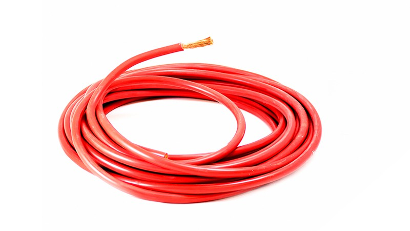

El cableado de red se utiliza para conectar dispositivos en una red de datos. Los tipos comunes incluyen:
El cable Ethernet Cat5e es ampliamente utilizado para redes Ethernet y proporciona velocidades de hasta 1 Gbps. Es adecuado para la mayoría de las aplicaciones de red.
El cable Ethernet Cat6 ofrece un mejor rendimiento que el Cat5e, con velocidades de hasta 10 Gbps en distancias cortas. Es ideal para redes de alta velocidad.
El cable Ethernet Cat7 es de alto rendimiento y proporciona velocidades de hasta 10 Gbps en distancias más largas. Está blindado para reducir interferencias.
El cableado eléctrico se utiliza para transmitir energía eléctrica. Algunos ejemplos son:
El cable eléctrico de cobre es ampliamente utilizado debido a su alta conductividad y durabilidad. Es adecuado para aplicaciones residenciales y comerciales.
El cable eléctrico de aluminio es más ligero que el cobre, pero se utiliza principalmente en aplicaciones de transmisión de alta tensión.
El cable eléctrico revestido de goma es resistente a la humedad y se utiliza en entornos donde se requiere protección adicional.
|  | |
El cableado de audio se utiliza para transmitir señales de audio. Ejemplos de cables de audio son:
El cable de audio RCA se utiliza comúnmente para conectar dispositivos de audio y video. Viene en colores rojo y blanco para canales estéreo.
El cable de audio XLR se usa en aplicaciones profesionales y de estudio debido a su capacidad de transmitir señales balanceadas y de alta calidad.
El cable de audio óptico utiliza luz para transmitir señales de audio digital, lo que lo hace ideal para sistemas de sonido envolvente y alta fidelidad.
 |
Estos son solo algunos ejemplos de tipos de cableado utilizados en diferentes aplicaciones. Cada tipo de cable tiene sus propias especificaciones y usos particulares.